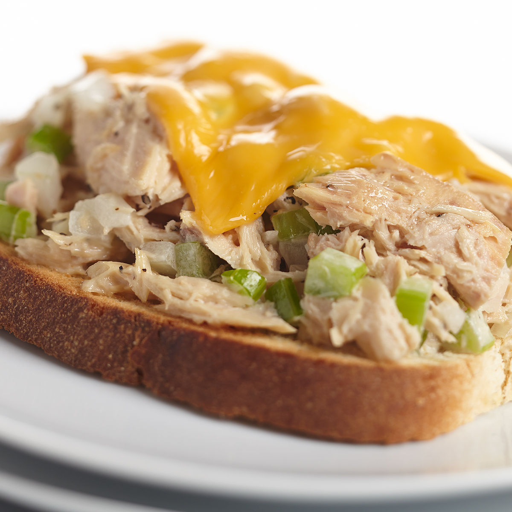

Tuna Melt

Description
This sandwich is easy to make
and relatively nutritious, although
the amount of mercury in the tuna
could be a concern if you make it too regularly.
Ingredients
- 2 slices of bread or 1 english muffin, split
- 1 can tuna, drained
- 2 Tbsp mayonaise
- 1 tsp mustard
- 1/2 stalk celery, chopped
- 2 slices cheddar cheese
Steps
- Set the oven to broil on high.
- Combine tuna, mayonaise, mustard, and celery in a small bowl.
- Spread tuna mixture on bread slices.
- Top tuna mixture with cheese slices.
- Place bread on pan under the broiler.
- Boil until cheese is melted and bubbly, about 10 minutes.